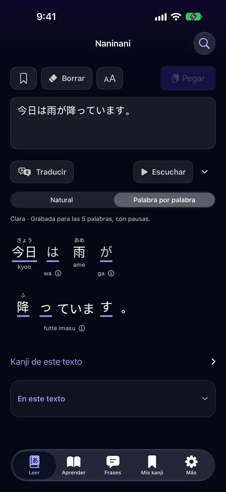
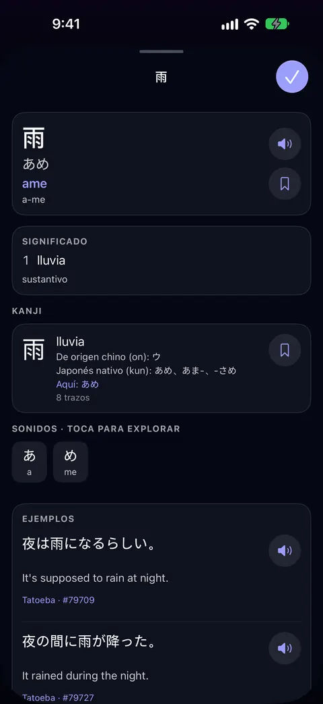
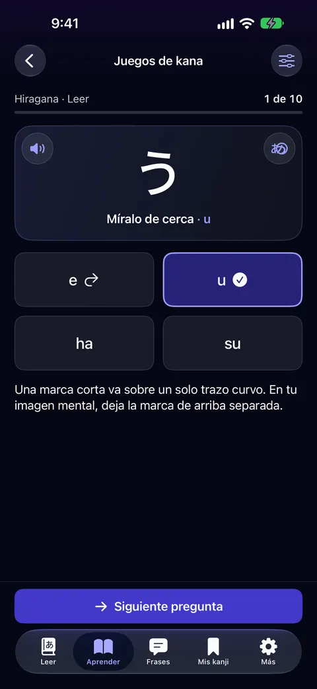
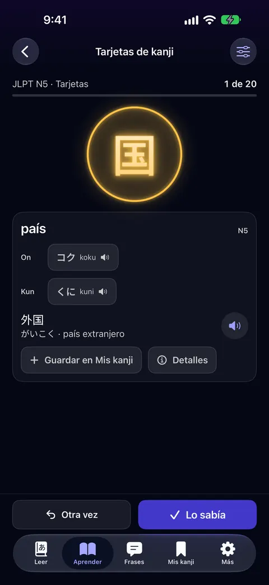
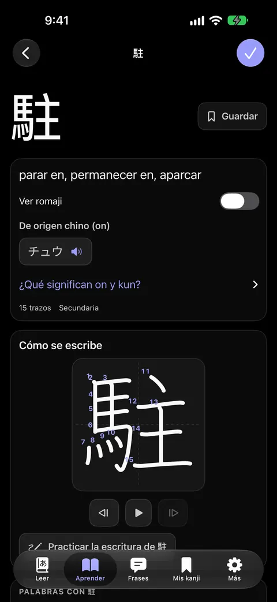

Naninani
Lector de japonés
Lee japonés palabra por palabra: furigana, lecturas y significados, juegos de kana, kanji con su orden de trazos y frases grabadas. Funciona sin conexión, sin cuentas y sin publicidad.
App Store La 1.1.3 está publicada desde el 6 de noviembre de 2026. La 1.2.0, la primera en español, espera la revisión de Apple desde el 9 de noviembre y se publica sola cuando la aprueben.
- Requiere
- iPhone con iOS 17 o posterior; Apple Watch desde la 1.2.0
- Idiomas
- Inglés; español desde la 1.2.0
- Ayuda y privacidad
- En su sitio, yomu.neorgon.com, en inglés




